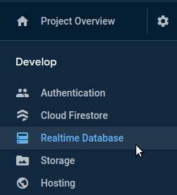

Intro to Backend Development
Written by Curtis Lee
Slides
Fundamentals
What is Full Stack?
It boils down to three (3) concepts:
- Frontend software that the user sees and interacts with.
- Backend software that can handle specific requests and dynamically sends/recieves information to/from the user.
- Database that stores pretty much all information our app uses.
There are endless configurations depending on the application. Sometimes, these components may be combined or further seperated to varying degrees. Regardless, all components must work together to produce a web app.
Imagine a trinity of cards: Frontend, Backend, and Database. A developer that holds all three cards is said to have the "Full Stack", and thus can build a complete web app.
What is Backend?
In traditional web development, backend software runs the "business logic" of our app. For example, a basic workflow may be like this:
- The user fills out a login form on our app.
- The user's browser sends a login request + the credentials to the backend server.
- The backend recieves this information.
- The backend queries the database to see if the user exists.
- If the user exists, see if username & password match.
- If everything is correct, send our content back to the user. Otherwise, send an error message.
Setting up a backend server is usually not easy. We would need to have extensive knowledge of setting up servers, networking, operating systems, and software. And that's before we even write any code, which may also require mastering multiple programming languages!
This is not feasible without the proper expertise and lots of time. So we will not be doing that.
Instead, we will leverage Cloud Services that do the hard work for us, so we can better focus on our ideas.
Intro to Firebase
Firebase is Google's solution to the problem. Firebase has reduced the entire Backend + Database stack into simpler services that we can rent out. Essentially, we are outsourcing all the hard technical work to Google.
Getting Started
Using Firebase is comparable to using any other Google cloud service like Gmail or Drive. First, we create a Project for our product. Then we can add different services such as Realtime Database or Authentication and create keys to be used by one or more Apps utilizng our Project's services.
Creating a Project
-
Sign in to firebase.google.com (feel free to use your UCSD account)
-
Click Go to Console in the top right corner.
-
Click Add Project.
-
Fill out the forms and continue.
- Any name is ok. I recommend ECE196-Fall2020-IOT-YourName.
- Google Analytics is optional. We won't be using it, but it could be nice to have if we further develop the app later.
- Accept terms and conditions.
-
Once everything is set up, it should look something similar to this.

Adding Collaborators
- To add collaborators to the project, click on the Settings icon located on the top left.
- Select Users and permissions.
- Click the Add member button.
- As for roles, select either Owner or Editor. This can always be changed later.
- Once the member is added, they should receive an email invitation to join.
Realtime Database
Choosing a Database
Firebase offers two different products for our Database needs.
For the Free Plan as of 2020, here are the key similarities and differences:
| Spec | Realtime | Firestore |
|---|---|---|
| Type | NoSQL | NoSQL |
| Structure | Basic JSON | Documents & Collections |
| Storage | 10 GB | 10 GB |
| Bandwidth | 10GiB/month | 10GiB/month |
| Simultaneous Connections | 100 max | No limit |
| Document writes | No limit | 20K/day |
| Document reads | No limit | 50K/day |
| Document deletes | No limit | 20K/day |
A more in-depth comparison can be found here. We can also view pricing for paid plans here.
For our application, we will pick Realtime Database.
- Basic JSON structure is easy to learn
- Not many users, but document I/O adds up fast.
Creating a Database
-
Open the Realtime Database service on the sidebar:

-
Start in Test Mode.
-
Click on the Rules tab and verify read and write access is set to
true.


Obtaining Keys
Adding a Service Account
To connect our Raspberry Pi to Firebase, we need to generate a Service Account key to use Firebase Admin SDK.
- Click on the project's Settings icon and click on Project Settings
- Navigate to the Service Accounts tab.
- Click Generate new Private Key.
- Save this project key somewhere where we can later copy it to the Raspberry Pi.

Warning
Your private key gives access to your project's Firebase services. Keep it confidential and never store it in a public repository. Store this file securely, because your new key can't be recovered if lost.
If using Git, always add the name of this file to the project's .gitignore.
Adding an App
- Also in Settings, under General tab and Your Apps section, click Add App. Select the Web platform.
- Fill out the form
- Any name is ok. I recommend Web App.
- We won't be using Firebase Hosting for now. (instead we'll use GitHub Pages later on)
- It should now spit out some info under Add Firebase SDK. The important part we care about is the
var firebaseConfigdictionary. We can always come back to view this information anytime.const firebaseConfig = { apiKey: ... authDomain: ... databaseURL: ... projectId: ... storageBucket: ... messagingSenderId: ... appId: ... measurementId: ... };
We won't need this App key until the Frontend portion.
Info
Technically, none of the var firebaseConfig fields are sensitive information. In fact, this information will later be necessary for the end user to access our app. It is OK to commit this to the Git repository.
Connecting to Firebase
To send data to the cloud, our Raspberry Pi needs to connect to Firebase.
We first import the libraries and initialize Firebase Admin:
import firebase_admin
from firebase_admin import credentials
cred = credentials.Certificate( “PATH_TO_SERVICE_ACCOUNT_FILE.json” )
firebase_admin.initialize_app( cred, { “databaseURL”: “LINK_TO_DATABASE_URL” } )
Note
- replace the PATH_TO_SERVICE_ACCOUNT_FILE with the appropriate path
- replace the LINK_TO_DATABASE_URL with the appropriate URL
- Ues the following link to refer to the official documentation
We also need to import the library for database and get a Reference.
from firebase_admin import db
db_ref = db.reference( “PATH_TO_REFERENCE” )
db_ref.set( VALUE )
data = db_ref.get()
Note
- replace the PATH_TO_REFERENCE with the appropriate path
- replace VALUE with the appropriate value
Complete Code
Should look similar to this:
import firebase_admin
from firebase_admin import credentials
from firebase_admin import db
import Adafruit_DHT
DHT_SENSOR = Adaruit_DHT.DHT22
DHT_PIN = 4
cred = credentials.Certificate( “PATH_TO_SERVICE_ACCOUNT_FILE.json” )
firebase_admin.initialize_app( cred, { “databaseURL”: “LINK_TO_DATABASE_URL” } )
while True:
hum, temp = Adaruit_DHT.read_retry( DHT_SENSOR, DHT_PIN )
temp_ref = db.reference( “sensor/temperature” )
temp_ref.set( temp )
hum_ref = db.reference( “sensor/humidity” )
hum_ref.set( hum )
print( “Humidity =”, hum )
print( “Temperature =”, temp)
time.sleep( 10 )